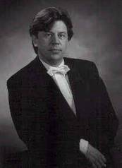
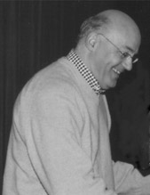

Dirigenten
Jos van de Braak
Jos van de Braak ontving zijn eerste muziekonderwijs als lid van Harmonie St.Michaël van Thorn. Hij studeerde directie aan het Utrechts Conservatorium en Muziekwetenschap aan de Rijksuniversiteit Utrecht. In 1980 startte zijn carrière als dirigent welke een grote artistieke impuls kreeg toen hij in 1985 bij het fameuze orkest Harmonie St.Michaël van Thorn werd benoemd als assistent van Heinz Friesen. Nog steeds werkt hij regelmatig als gastdirigent met dit orkest. Daarnaast is Jos van de Braak verbonden als dirigent aan Sophia's Vereeniging uit Loon op Zand, de Philharmonie uit Bocholtz, Harmonieorkest O&U uit Beek en Donk en het Studentenharmonieorkest Auletes uit Eindhoven. Tevens is hij vanaf 2005 artistiek leider van het Blazersensemble Zuiderwind.
In ruim 25 jaar dirigeren heeft Jos van de Braak een uitgebreid repertoire opgebouwd waarin naast originele composities veel plaats is ingeruimd voor symfonische bewerkingen. Ook heeft hij zich intensief beziggehouden met de verrassende combinatie van opera en blaasmuziek vaak in samenwerkingsprojecten met Opera Studio Nederland. Dit alles heeft geresulteerd in een door kwaliteit gedreven en muzikaal doorleefde dirigeerstijl die hem in staat stelt om samen met orkesten steeds nieuwe uitdagingen aan te gaan. Ook als arrangeur van symfonische werken voor harmonieorkest heeft Jos van de Braak zijn sporen verdiend. Er staan meer dan 130 arrangementen op zijn naam die inmiddels over de gehele wereld worden uitgevoerd. De arrangementen van Jos van de Braak zijn uitgegeven bij Baton Music in Eindhoven.
Aan de Technische Universiteit Eindhoven vervult Jos van de Braak al bijna 15 jaar de functie van muzikaal (bege)leider van het studentenharmonieorkest Auletes. Ooit is hij begonnen met een klein blazersensemble. Echter door het organiseren van de jaarlijkse projectconcerten heeft Auletes onder zijn leiding een nieuwe impuls gekregen, waardoor het enthousiasme bij de leden en de dirigent zeer zeker explosief zijn toegenomen. Het orkest heeft zich gevormd tot een volwaardig (studenten)harmonieorkest waar Eindhoven trots op kan zijn! De Queen Symphony is het laatste concert van Auletes met Jos van de Braak als vaste dirigent, het zal een waardige afsluiting van een lange en mooie periode worden.
Frans van de Goor
Al meer dan 25 jaar staan de Koninklijke Gemengde Zangvereniging "De Volharding" en het Koninklijk Mannenkoor "La Bonne Espérance" onder leiding van Frans van de Goor. Onder zijn leiding zijn met succes vele grote klassieke werken ten gehore gebracht door het koor. Hij studeerde aan het conservatorium te Tilburg en voltooide daar zijn studie voor piano, orgel en directie. Evenals bij het Koninklijk Mannenkoor "La Bonne Esperance" te Eindhoven volgde hij ruim 25 geleden zijn vader op bij "De Volharding" met een grote voorliefde voor de koormuziek. Naast zijn deskundigheid, enthousiasme en bezieling beschikt hij over educatieve eigenschappen die repeteren en uitvoeren onder zijn leiding tot een plezier maken voor de koorleden.
Van de vele hoogtepunten onder zijn leiding noemen wij de vele uitvoeringen met "Het Brabants Orkest" en onder andere de meermaals uitgevoerde "Carmina Burana in samenwerking met harmonie "St. Michael" uit Thorn. Een complete opsomming van alle concerten zou hier te ver voeren.